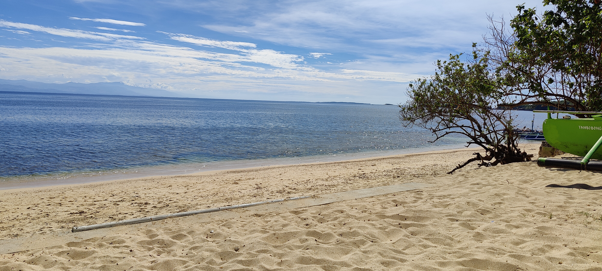
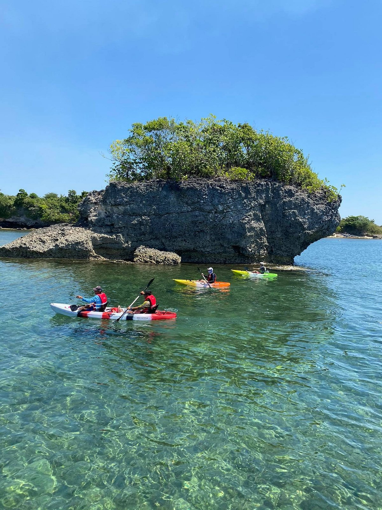
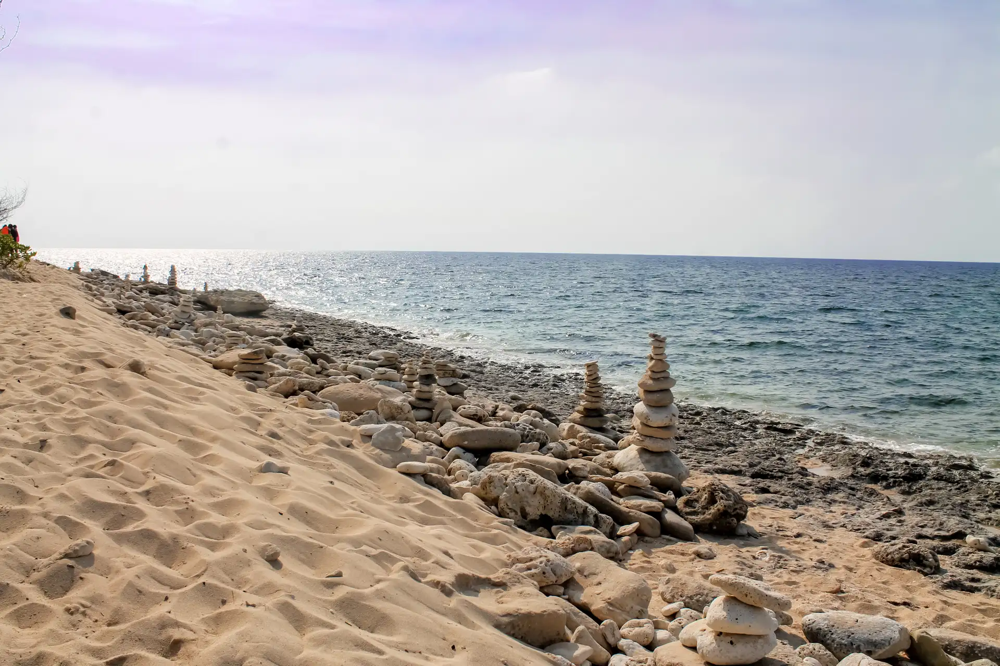

Tambobong Beach is a quiet coastal village beach in Dasol, Pangasinan, Philippines, facing the West Philippine Sea. It is known for its creamy white sand, clear turquoise water, and laid-back fishing-town atmosphere, often described as one of western Pangasinan's more low-key beach escapes.
Setting and Atmosphere

Tambobong Beach lies along the western coastline of Dasol in a small rural barangay where fishing life still shapes the shoreline. Instead of long rows of hotels or heavily commercialized spaces, visitors find colorful bangkas on the sand and local fishermen working near the water's edge.
This gives the beach a relaxed, lived-in feel rather than a polished tourist strip, and evenings are usually quiet and unhurried. Coconut trees and low hillside vegetation add to the provincial ambiance, reinforcing the sense that Tambobong is shaped by both community and nature.
The waters tend to be calm and shallow for several meters from the shore, making them suitable for children and for gentle swimming. Distant islets and sea formations often frame the horizon, adding to the beach's peaceful character.
Activities

The most common activities at Tambobong Beach are simple and relaxed. Visitors swim, beachcomb, lounge on the sand, enjoy picnics, and spend long afternoons in the calm surf.
Tambobong is also a jump-off point for island-hopping tours to nearby spots like Colibra Island, Snake Island, and hidden coastal coves. Local boat operators provide half-day or full-day trips that allow visitors to explore secluded beaches while supporting the local community.
Depending on availability, basic water activities such as kayaking, banana boat rides, and jet ski rentals may also be offered through nearby resorts.
Tourism Facilities
Infrastructure at Tambobong Beach is modest but improving. Small resorts, simple beach cottages, and homestays serve visitors, offering a mix of fan rooms, air-conditioned rooms, and occasional campsites for overnight stays.
Local eateries serve home-style Filipino meals, often featuring fresh seafood depending on the day's catch. These simple but useful facilities complement the beach's natural atmosphere and make it possible to stay for more than a quick day trip.
Environment and Considerations

Visitors often praise Tambobong Beach for its natural beauty and kid-friendly shallows, though some note occasional trash along parts of the shore and busier areas near boat landings. Maintaining its appeal depends on responsible tourism practices.
The community encourages visitors to minimize plastic use, pack out trash, and respect local guidelines. Tambobong continues to be valued for its authentic coastal lifestyle, where calm waters, local life, and natural scenery exist side by side.
With careful stewardship, the beach can remain a quiet and scenic destination for years to come.